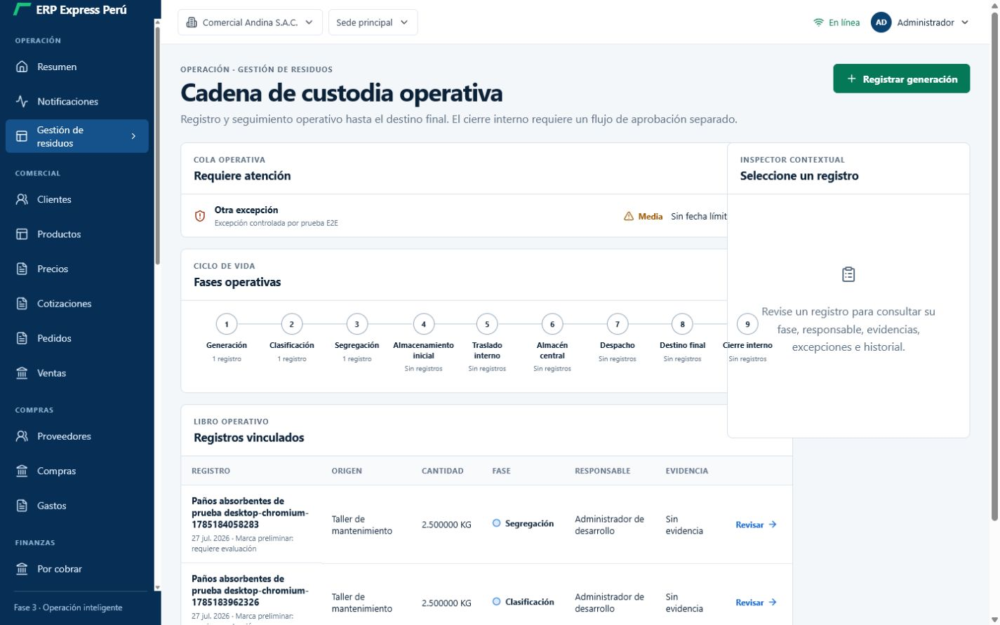
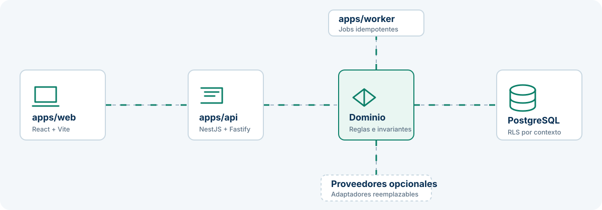
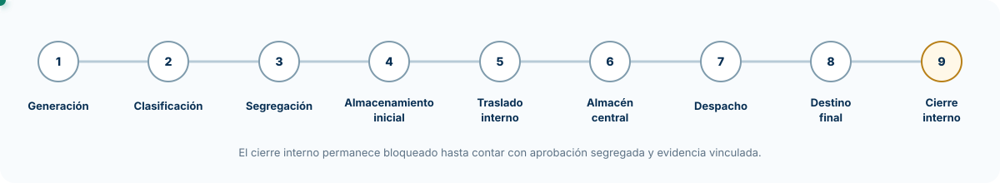

Monolito modular
Módulos cohesionados por dominio, desplegados como una unidad portable.
Una base empresarial portable para registrar operaciones, gobernar módulos y conservar trazabilidad con seguridad por diseño.
ZIP portable · Datos sintéticos · Uso local con Docker Compose
Una operación, un contexto
La pantalla reúne el registro, las nueve fases, la cola de excepciones y el detalle contextual para reducir saltos y conservar la secuencia operativa.

Paquete listo para evaluar
La versión portable incluye código, configuración Docker, scripts para Windows, Linux y macOS, inventario de licencias, SBOM CycloneDX y checksums SHA-256.
Demostración técnica con datos sintéticos. No apta para producción ni para almacenar datos reales.
Diseño con propósito
Los módulos se organizan por dominio. Los puertos y adaptadores desacoplan la lógica de negocio de React, NestJS, PostgreSQL y los proveedores externos.
El ámbito de tenant y empresa se deriva de la sesión, con políticas RLS que refuerzan el aislamiento en la persistencia.
Módulos cohesionados por dominio, desplegados como una unidad portable.
Puertos y adaptadores que desacoplan la lógica de negocio.
Autorización en API, contexto de sesión y PostgreSQL con RLS.
Auditoría, outbox, idempotencia y pruebas reproducibles.

Gestión de residuos
Cada avance valida la fase anterior y conserva un evento trazable. El cierre interno se mantiene fuera del flujo ordinario.

El cierre interno está bloqueado hasta contar con aprobación segregada y evidencia documental vinculada. Esta capacidad no acredita cumplimiento ambiental ni cierre regulatorio.
Documentación